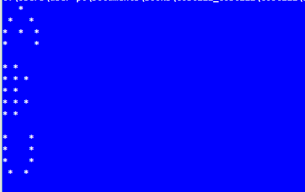

A print statement is actually a call to the print or println method of the System.out object. The print method takes exactly one argument or no arguments. However, it can take string or numeric value
//Printing.java
public class Printing{
public static void main(String[] args){
System.out.print("Computer");
System.out.print("Science");
System.out.print("Department");
}
}
//PrintingLine.java
public class PrintingLine{
public static void main(String[] args){
System.out.println(Computer");
System.out.println("Science");
System.out.println("Department");
}
}
Composed of literals and format specifiers. Arguments are required only if there are format specifiers in the format string. Format specifiers include: flags, width, precision, and conversion characters in the following sequence:
% [flags] [width] [.precision] conversion-character ( square brackets denote optional parameters )
- : left-justify ( default is to right-justify ) + : output a plus ( + ) or minus ( - ) sign for a numerical value 0 : forces numerical values to be zero-padded ( default is blank padding ) , : comma grouping separator (for numbers > 1000) : space will display a minus sign if the number is negative or a space if it is positive
Specifies the field width for outputting the argument and represents the minimum number of characters to be written to the output. Include space for expected commas and a decimal point in the determination of the width for numerical values.
Used to restrict the output depending on the conversion. It specifies the number of digits of precision when outputting floating-point values or the length of a substring to extract from a String. Numbers are rounded to the specified precision
d : decimal integer [byte, short, int, long] f : floating-point number [float, double] c : character Capital C will uppercase the letter s : String Capital S will uppercase all the letters in the string h : hashcode A hashcode is like an address. This is useful for printing a reference n : newline Platform specific newline character- use %n instead of \n for greater compatibility
//PrintingFormat.java
public class PrintingFormat{
public static void main(String[] args){
System.out.printf("%d",60);
System.out.println();
System.out.printf("%03d%n",9);
System.out.printf("PI %.3f",3.141527);
System.out.println();
System.out.printf("Total is: N%,.2f%n", 84785.8978);
System.out.printf("%-10S%n","Department of Computer Science");
System.out.printf("% .2f",-67.8917);
System.out.println();
System.out.printf("% .2f",67.8917);
System.out.println();
System.out.printf("%C",'a');
System.out.println();
}
}
A character preceded by a backslash (\) is an escape sequence and has a special meaning to the compiler.
Following table shows the Java escape sequences -
| Escape Sequence | Description |
|---|---|
| \t | Inserts a tab in the text at this point. |
| \b | Inserts a backspace in the text at this point. |
| \n | Inserts a newline in the text at this point. |
| \r | Inserts a carriage return in the text at this point.. |
| \f | Inserts a form feed in the text at this point. |
| \' | Inserts a single quote character in the text at this point. |
| \" | Inserts a double quote character in the text at this point. |
| \\ | Inserts a backslash character in the text at this point. |
When an escape sequence is encountered in a print statement, the compiler interprets it accordingly.
// EscapeSequence.java
public class EscapeSequence {
public static void main(String args[]) {
System.out.println("ABU said \"To pass, you must work hard!\".\n");
System.out.println("Two Sided Triangles\n*\t*****\n**\t ****\n***\t ***\n****\t **\n*****\t *\n");
System.out.println("A Diamond \n *\n\r ***\n\r*****\n ***\n *\n");
System.out.println("A Letter S\n *\n\b* *\n * \n* *\n *");
System.out.println(" E = 46.12 * 6.9 - 2.5 * 10\n\t\b______________________\n\t 90.5 * 11.6");
}
}
1. Write a program that displays the following pattern
2. Write a program that displays the following table
1 2 3 4 1 1 2 3 4 2 2 4 6 16 3 3 6 9 12 4 4 8 12 16